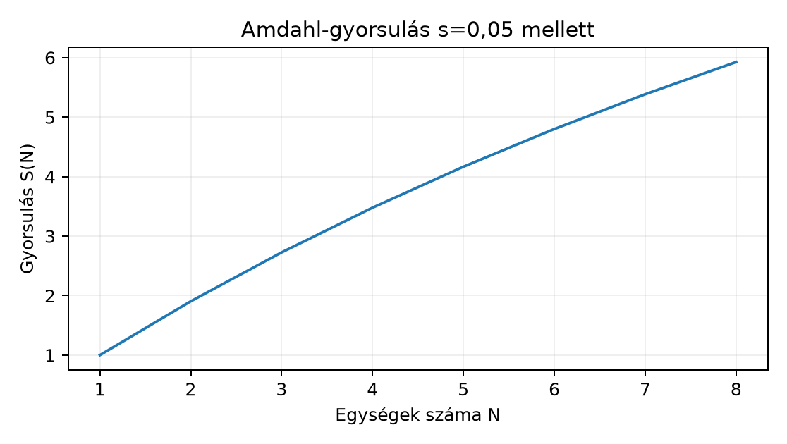

Egy háromfős adattudományi csapat három párhuzamos feladaton dolgozik. Az A projekt a Northstar-kezdőadaton (300 ügyfél, 2400 rendelés, 8 ismert feature) logisztikus regressziót tanít, B projekt egymillió soros táblás adaton random forestet, C projekt pedig ötvenmillió sorból tanuló, tízmillió paraméteres neurális hálót futtat. A kérdés mindháromnál ugyanaz: helyi CPU, távoli CPU/GPU vagy elosztott rendszer kell? A hibás válasz drága: GPU-t adni egy 0,3 másodperces modellhez vagy klasztert indítani 10 MB adathoz a munkakör neve miatt, nem a mért korlát miatt. Az induló becslés: A helyi CPU, B többmagos CPU, C egy GPU; ezt a mérés pontosíthatja. A megfigyelési egység egy teljes kísérleti futás, a kimenet a futásidő, csúcsmemória, költség és reprodukálhatósági jegyzőkönyv.
A munkaterhelés (workload) típusát az uralkodó erőforrás-korlát adja. Egy futtatás idejét durva felbontással így becsülhetjük:
ahol
Ha dominál, a feladat számításkötött; ha dominál, memória- vagy I/O-kötött; ha a meghatározó, a párhuzamosítás overheadje a fő ellenfél. A pontos számításhoz mérés kell, de a képlet arra jó, hogy a szűk keresztmetszetet megkeressük.
A BLAS (Basic Linear Algebra Subprograms, alap
lineáris algebrai szubrutinok) a mátrixműveletek szabványos építőeleme.
A NumPy @ művelete jellemzően egy helyi BLAS-könyvtárhoz
fordul, amely jellemzően CPU-n fut, és implementációtól függően
többszálú lehet; a hagyományos NumPy-BLAS művelet nem használ
automatikusan GPU-t. Az
és
szorzás közelítő műveletigénye:
Kézi kontroll: esetén FLOP. Ha a gép 10 GFLOP/s-ot ér el, a számítási komponens s; a valódi idő ennél nagyobb a memóriából olvasás és az ütemezés miatt. A BLAS tehát nem automatikusan GPU-t jelent: CPU-n is párhuzamos szálakat futtat, és kis mátrixoknál a GPU-ra másolás több időt emészthet fel, mint a számítás.
A kötegelés (batching) a gradienses tanítás alapegysége: a modell egyszerre mintát dolgoz fel, és egy paraméterfrissítéshez a batch gradiensét használja. mintánál a lépések száma:
Példa: , esetén 4 lépés, esetén 8 lépés van. A nagyobb batch kevesebb lépést és több GPU-kihasználtságot adhat, de a batch aktivációit egyszerre kell a memóriában tartani, ezért a batch méretét a VRAM korlátozza.
A VRAM a grafikus kártya saját memóriája. A szükséges méret első közelítésben a paraméterektől, a batch aktivációktól és a visszaterjesztés köztes értékeitől függ. Egy paraméterű modell 32 bites lebegőpontos (fp32) súllyal paramétert foglal, a gradiens további 40 MB-ot, az optimizer nyomatékai és a batch aktivációi pedig ennek többszörösét tehetik ki. Ezért a memóriaszámítást nem elég a paraméterekből megtenni: a valós csúcs a tanítási lépés közben mérhető.
Ha a rendszer több gépre oszlik, a hálózati átvitel (network) költsége lép be. Az átviteli idő:
10 GiB adat 1 Gbit/s-os hálózaton , 10 Gbit/s-on 8 s; ezen felül jön a protokollszintű overhead. A következtetés: akkor érdemes elosztani az adatot, ha a távoli gépek közötti átvitel és ütemezés kisebb, mint a megtakarított számítási idő.
A skálázási veszteség (scaling overhead) az a jelenség, hogy a párhuzamosításból származó gyorsulás nem nő arányosan a gépek számával, mert a feladat egy része soros marad, és az összerendezés is időt fogyaszt. Az Amdahl-törvény szerint, ha a feladat hányada nem párhuzamosítható:
ahol az azonos sebességű egységek száma, pedig a gyorsulás dimenziótlan aránya. Példa: , esetén . A tökéletes lineáris gyorsulás 4 lenne; itt a hatékonyság . A kódban és a mérésekben ez konkrét összehasonlítási alap.

Az ábra mutatja, hogy 4 egységnél még 0,87 a hatékonyság, 8-nál már csak 0,74; a hozzáadott gépek egyre kevesebbet hoznak, miközben a hálózat és az ütemezés költsége nő. Ez a mérési varianciával együtt értelmezendő: ha a futásidő mérésének szórása 20%, akkor egy 10% gyorsulás nem igazolható megbízhatóan. Ezért minden erőforrás-döntést mért korlátból kell indítani: gépspecifikáció, adatméret, ismétlésszám, seed és pontos futási jegyzőkönyv nélkül a teljesítmény szám csak anekdota. A reprodukálhatóság különbségét is jegyezzük fel: a statisztikai bizonytalanság a mintából, nem a hardverből származik; a gyorsabb gép nem csökkenti a bootstrap-intervallum szélességét, csak több ismétlést enged.
A döntési lap eszközválasztás előtt kitöltendő. A három bevezető esetre:
| Eset | Mért input és becslés | Elsődleges választás | Elosztási feltétel |
|---|---|---|---|
| A: Northstar | 2400 sor, 8 feature, logreg, CV; RAM GB | Helyi CPU uv/Jupyter | Nem osztjuk el; a futás 30 s alatt marad |
| B: közepes táblás | 1 M sor, 60 feature, random forest 200 fa, 12 kombináció, 5-fold | Többmagos CPU, 64 GB VM | Csak akkor Dask, ha egy folyamat csúcs-RAM fizikai RAM |
| C: nagy ML | 50 M sor, 10 M paraméter, batch 64, 5 epoch | 1 GPU, 16 GB VRAM | Több GPU akkor, ha az egykártyás batch nem fér, és a mért gyorsulás hatékonysága |
A táblázat az „elosztási feltétel” oszlopban explicit küszöböt ad, tehát nem elég azt mondani, hogy „ha lassú”. A hatékonyság azt jelenti: 2 GPU-val legalább -szeres mért gyorsulás az 1 GPU-hoz képest ugyanazon batch, seed és adat mellett. A 80%-os memória-küszöb azt kerüli el, hogy a swap már a mérés alatt eltorzítsa az eredményt.
A helyi mérési kontrollhoz készítsünk egy minimális BLAS-benchmarkot. A következő kódot a tanuló a saját gépen futtathatja; az alábbi kimeneti alak szemléltető, nem mért, mert a könyvírás nem hajtja végre a scriptet. A méréshez rögzíteni kell a processzormodellt, magszámot, NumPy-verziót és a futás időpontját.
# döntési_mérés.py
# Platform: bármely, ahol a projekt virtuális környezete aktív; cwd = projektgyökér.
# A mérést a tanuló futtatja; az alábbi kimenet csak alakminta.
import platform, statistics, time
import numpy as np
def measure_dot(m, k, n, reps=7, seed=20261020):
rng = np.random.default_rng(seed)
a = rng.normal(size=(m, k))
b = rng.normal(size=(k, n))
samples = []
for _ in range(reps):
t0 = time.perf_counter()
c = a @ b
_ = np.sum(c) # a késleltetett BLAS-kimenetet felolvassuk
samples.append(time.perf_counter() - t0)
return statistics.median(samples), min(samples), max(samples)
for m in (100, 500, 1000):
med, mn, mx = measure_dot(m, m, m)
flop = 2 * m ** 3
print(f"m={m:>4d} median={med:.4f}s min={mn:.4f}s max={mx:.4f}s "
f"flop={flop:.3e} gflops={flop/med/1e9:.1f}")
# Szemléltető várt kimeneti alak (nem mért):
# m= 100 median=0.0012s min=0.0009s max=0.0028s flop=2.000e+06 gflops=1.7
# m= 500 median=0.0210s min=0.0190s max=0.0400s flop=2.500e+08 gflops=11.9
# m=1000 median=0.1500s min=0.1400s max=0.2900s flop=2.000e+09 gflops=13.3A mérés értelmezése nem a pontos futásidő, hanem a mérési variancia és a skálázódás. Ha a medián idő -nál 0,001 s, -nél 0,15 s, akkor a munka közelítőleg a várt -ös növekedést követi; a min–max tartomány 2–3-szoros szórása viszont arra figyelmeztet, hogy 10%-os különbségekből hardverdöntést levonni nem szabad. A GFLOP/s érték az elméleti műveletszám és a mért idő hányadosa; ellenőrző invariant, hogy a műveletszám pontosan , a mért idő pedig pozitív valós szám.
A döntési lapot ezután így töltjük ki. A projekt A mérési futása a
starter_experiment.py scripttel ellenőrizhető; ha 10
ismétlés mediánja 5 s alatt van, a CPU-döntés stabil. A B projektnél a
random forest tanítása a faillesztés miatt sok elágazást és
memória-keresést végez, ezért a szűk keresztmetszet a CPU, nem a BLAS; a
GPU itt nem segít. A C projektnél a batch
,
a modell 40 MB paraméter + 40 MB gradiens + optimizer, így 16 GB
VRAM-nál a korlát az aktivációk; ha az egy batch csúcsmemóriája eléri a
12 GB-ot, akkor kell batch-csökkentés vagy nagyobb kártya; ha a futási
idő 1 GPU-n 8 óra, akkor a párhuzamosítás előtti mért overhead kell.
max_depth=15) miért nem
elsődleges a GPU? Nevezd meg a munka jellegét, és adj egy elérhető
mérési jelet, amely megerősíti a döntést.measure_dot függvénnyel
-ra
kiszámítja a medián időt és a GFLOP/s-ot, majd kiírja, hogy a
mátrixszorzás ideje monoton nő-e. A seed legyen 20261020, az
ismétlésszám 9.1. megoldás. A random forest faillesztése során a rendezések, hisztogramok és elágazások sok apró, adatfüggő memória-hozzáférést végeznek, nem pedig hosszú mátrixszorzásokat. A scikit-learn implementáció CPU-n futtat; a GPU-ra portolt változatok sem feltétlenül gyorsabbak ezen a feladaton. Mérési jel: a CPU magok kihasználtsága közel 100% a tanítás alatt, a GPU kihasználtsága viszont nulla vagy oszcilláló, míg a futásidő nem csökken GPU-hozzárendeléssel. Ellenőrző invariant: a várt munka nagyságrendje jellegű, ami CPU-ütemezéssel jobban szabályozható.
2. megoldás.
# mérés_bővített.py, platform: helyi virtuális környezet, cwd = projektgyökér
import statistics, time
import numpy as np
def measure_dot(m, k, n, reps=9, seed=20261020):
rng = np.random.default_rng(seed)
a = rng.normal(size=(m, k))
b = rng.normal(size=(k, n))
samples = []
for _ in range(reps):
t0 = time.perf_counter()
c = a @ b
_ = np.sum(c)
samples.append(time.perf_counter() - t0)
return statistics.median(samples)
prev = None
for m in (200, 400, 800):
med = measure_dot(m, m, m)
flop = 2 * m ** 3
print(f"m={m:>3d} median={med:.4f}s gflops={flop/med/1e9:.1f} "
f"monotone={prev is None or med > prev}")
prev = medA kimenetet a tanuló gépe határozza meg; a kód az idő monoton növekedését logikai értékként írja ki. Ellenőrzés: a FLOP-szám , az egyes GFLOP/s-értékek toleranciája a mérés természetes varianciája miatt 10–30%; ha -nál a GFLOP/s lényegesen magasabb, a cache- vagy BLAS-hatás miatt a mérési kontrollt újra kell futtatni.
3. megoldás. A napló I/O-kötöttséget mutat: a GPU a számítást rövid tüskékben elvégzi, majd vár az adatra, a CPU pedig nem számol. A nagyobb GPU nem segít, mert a betöltés nem gyorsul. Két mérés a döntés előtt:
__iter__) és a modell forward lépését; számítsuk a mediánt
és a p90 értéket. Ha a betöltés p90-je több mint háromszorosa a forward
p90-jének, az I/O a korlát.prefetch
mélységét; növeljük a DataLoader num_workers értékét, és
mérjük újra. Ha a betöltési idő harmadára csökken, a hiba a gyenge
adatcső volt, nem a GPU.4. megoldás. A sorok szerinti párhuzamosítás Amdahl-gyorsulása , : . Ha ehhez 10% ütemezési overhead adódik, a hasznos gyorsulás -szoros, tehát 40 percből körülbelül 14–17 perc lehet. Ez azonban csak akkor igaz, ha a foldok sorai függetlenek, a partíciók kiegyenlítettek, és a kommunikáció minimális. Elosztani akkor érdemes, ha a 240 000 soros adat egyetlen gépen már nem fér a RAM-ba, vagy ha a futási idő költségkeretet sért; előbb azonban olcsóbb a foldok számának csökkentése vagy a feature-műveletek vektorizálása, mert 240 000 8 float64 alig 15 MB.
A leggyakoribb tévedés: „data scientist vagyok, tehát GPU és klaszter kell.” Ellenpélda: a Northstar 2400 soros logisztikus regresszióját GPU-ra ütemezve a CUDA-kontextus indítása és az adat másolása gyakran hosszabb, mint a teljes helyi CPU-s tanítás; a klaszter pedig 10 MB adaton a schedulerindítás miatt lassabb. A munkakör neve nem mért korlát.
Korábbi fogalmak visszahívása: a Dask task gráfnál tanultuk, hogy a sok apró task overheadje nagyobb lehet a hasznos munkánál; ugyanez igaz a GPU-ra küldött apró batch-ekre. A kalibrációs és predikciós bizonytalanságnál láttuk, hogy az intervallum szélessége a minta- és modellbizonytalanságból ered, nem a hardverből; gyorsabb gép csak több szimulációt enged, nem csökkenti a standard hibát. Az R-beli OLS-nél Tábla és formula R-ben is a minta elemszáma határozta meg a standard error-t, nem a futtatógép.
Önellenőrzés. Számold ki: 32 MB adat 1 Gbit/s hálózaton hány másodperc? ( s plusz késleltetés.) Mennyi az Amdahl-gyorsulás , esetén? (; a nyolc gépből háromnál kevesebb hasznosul.) Ha a mért mátrixszorzási idő -re 0,15 s, mekkora a GFLOP/s? ( GFLOP/s; ha a gép csúcsértéke 100 GFLOP/s, akkor nem számításkötött a BLAS, hanem memória-korlátos a művelet.)
A CPU, GPU és elosztott rendszer közötti választás mért szűk keresztmetszetből indul: műveletigény, memória, I/O és ütemezési overhead. A BLAS a mátrixműveleteket gyorsítja, a batching a gradienses tanítás egysége, a VRAM a batch és aktiváció korlátja, a hálózati átvitel és az Amdahl-veszteség pedig az elosztás valódi árát mutatja. A három eset döntési lapja: kicsi Northstar helyi CPU, egymillió soros random forest többmagos CPU, ötvenmillió soros mély modell egy GPU; a több GPU-ra és klaszterre csak explicit, mérhető feltétellel lépünk. A következő Eszközbevezetés, licenc és verziófrissítés alfejezetben az eszközbevezetés, licenc és verziófrissítés döntési keretét tárgyaljuk.